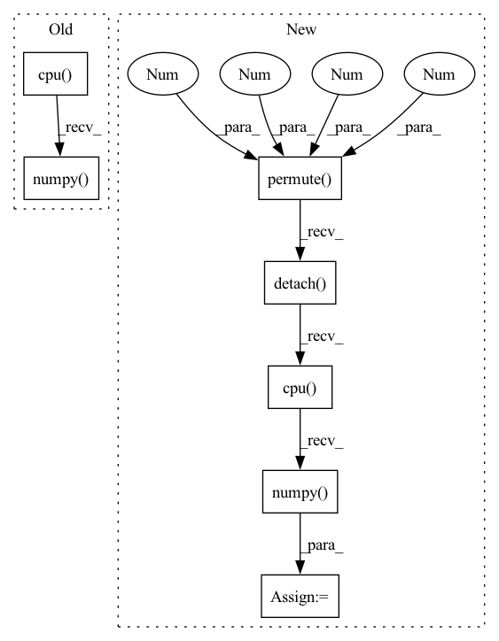

Pattern ID :6709
Before Change
for data in test_loader:
x = data[0].squeeze(0).squeeze(0).detach().cpu().numpy()
y = data[1].squeeze(0).squeeze(0).detach().cpu().numpy()
x_seg = data[2].squeeze(0).squeeze(0).detach().cpu().numpy()
y_seg = data[3].squeeze(0).squeeze(0).detach().cpu().numpy()
x = ants.from_numpy(x)
y = ants.from_numpy(y)
After Change
x_seg_oh = nn.functional.one_hot(x_seg.long(), num_classes=46)
x_seg_oh = torch.squeeze(x_seg_oh, 1)
x_seg_oh = x_seg_oh.permute( 0, 4 , 1 , 2 , 3 ) .contiguous()
x_seg_oh = x_seg_oh.squeeze(0).detach().cpu().numpy()
y_seg = data[3].squeeze(0).squeeze(0).detach().cpu().numpy()
In pattern: SUPERPATTERN
Frequency: 3
Non-data size: 7
Instances Fragment ID: 23051103
Project Name: junyuchen245/transmorph_transformer_for_medical_image_registration
Commit Name: 0612d1a704653ff98a92a228ecaefd2023577062
Time: 2022-09-07
Author: jchen245@jhmi.edu
File Name: IXI/Baseline_traditional_methods/SyN/infer_IXI.py
M Class Name: AnonimousClass
N Class Name: AnonimousClass
M Method Name: main(0)
N Method Name: main(0)
M Parent Class:
N Parent Class:
M File Name: IXI/Baseline_traditional_methods/SyN/infer_IXI.py
N File Name: IXI/Baseline_traditional_methods/SyN/infer_IXI.py
M Start Line: 57
M End Line: 86
N Start Line: 58
N End Line: 96
Before Change
device = layer._modules["_module_to_wrap"].bias.device
use_cuda = utils.is_model_on_gpu(layer)
quant_dequant_weight = get_quantized_dequantized_weight(layer, use_cuda).detach().cpu().numpy()
weight_tensor = layer._modules["_module_to_wrap"].weight
weight_tensor = weight_tensor.detach().cpu().numpy()
bias_tensor = libpymo.TensorParamBiasCorrection()After Change
// Transpose weights to C, N, H, W from N, C, H, W since axis are flipped for transposed conv
if isinstance(layer._modules["_module_to_wrap"], torch.nn.ConvTranspose2d):
weight_tensor = weight_tensor.permute(1, 0, 2, 3)
quant_dequant_weight = quant_dequant_weight.permute(1 , 0 , 2 , 3 )
quant_dequant_weight = quant_dequant_weight.detach().cpu().numpy()
weight_tensor = weight_tensor.detach().cpu().numpy()
bias_tensor = libpymo.TensorParamBiasCorrection()
bias_tensor.data = layer._modules["_module_to_wrap"].bias.detach().cpu().numpy() Fragment ID: 23051085
Project Name: quic/aimet
Commit Name: edf449bce5cb2bbf6c2d7443e2becb46540224ed
Time: 2020-08-14
Author: 63610745+quic-mangal@users.noreply.github.com
File Name: TrainingExtensions/torch/src/python/aimet_torch/bias_correction.py
M Class Name: AnonimousClass
N Class Name: AnonimousClass
M Method Name: call_analytical_mo_correct_bias(3)
N Method Name: call_analytical_mo_correct_bias(3)
M Parent Class:
N Parent Class:
M File Name: TrainingExtensions/torch/src/python/aimet_torch/bias_correction.py
N File Name: TrainingExtensions/torch/src/python/aimet_torch/bias_correction.py
M Start Line: 178
M End Line: 180
N Start Line: 178
N End Line: 219
Before Change
(def_seg, _, _, _) = lddmm.applyThisTransform(x_seg, interpmode="nearest")
flow = lddmm.computeThisDisplacement()
flow = np.stack(flow, axis=0)
def_seg = def_seg[-1].cpu().numpy()
def_seg = torch.from_numpy(def_seg[None, None, ...])
tar_seg = torch.from_numpy(y_seg[None, None, ...])
dsc_trans = utils.dice_val(def_seg.long(), tar_seg.long(), 46)
After Change
for data in test_loader:
x_seg_oh = nn.functional.one_hot(data[2].long(), num_classes=46)
x_seg_oh = torch.squeeze(x_seg_oh, 1)
x_seg_oh = x_seg_oh.permute(0, 4, 1, 2, 3).contiguous().float().detach().cpu().numpy()
x = data[0].squeeze(0).squeeze(0).detach().cpu().numpy()
y = data[1].squeeze(0).squeeze(0).detach().cpu().numpy()
x_seg = data[2].squeeze(0).squeeze(0).detach().cpu().numpy()
Fragment ID: 23051079
Project Name: junyuchen245/transmorph_transformer_for_medical_image_registration
Commit Name: ec64eeca27e8c76ff542d65f42b73a4ec8c82640
Time: 2022-09-07
Author: jchen245@jhmi.edu
File Name: IXI/Baseline_traditional_methods/LDDMM/infer_IXI.py
M Class Name: AnonimousClass
N Class Name: AnonimousClass
M Method Name: main(0)
N Method Name: main(0)
M Parent Class:
N Parent Class:
M File Name: IXI/Baseline_traditional_methods/LDDMM/infer_IXI.py
N File Name: IXI/Baseline_traditional_methods/LDDMM/infer_IXI.py
M Start Line: 62
M End Line: 83
N Start Line: 59
N End Line: 92